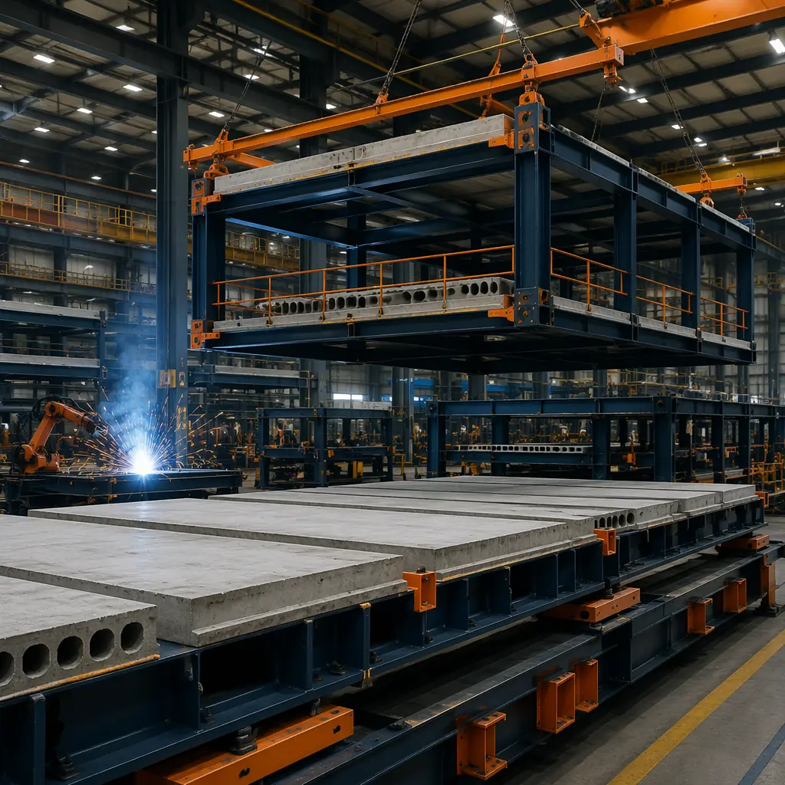
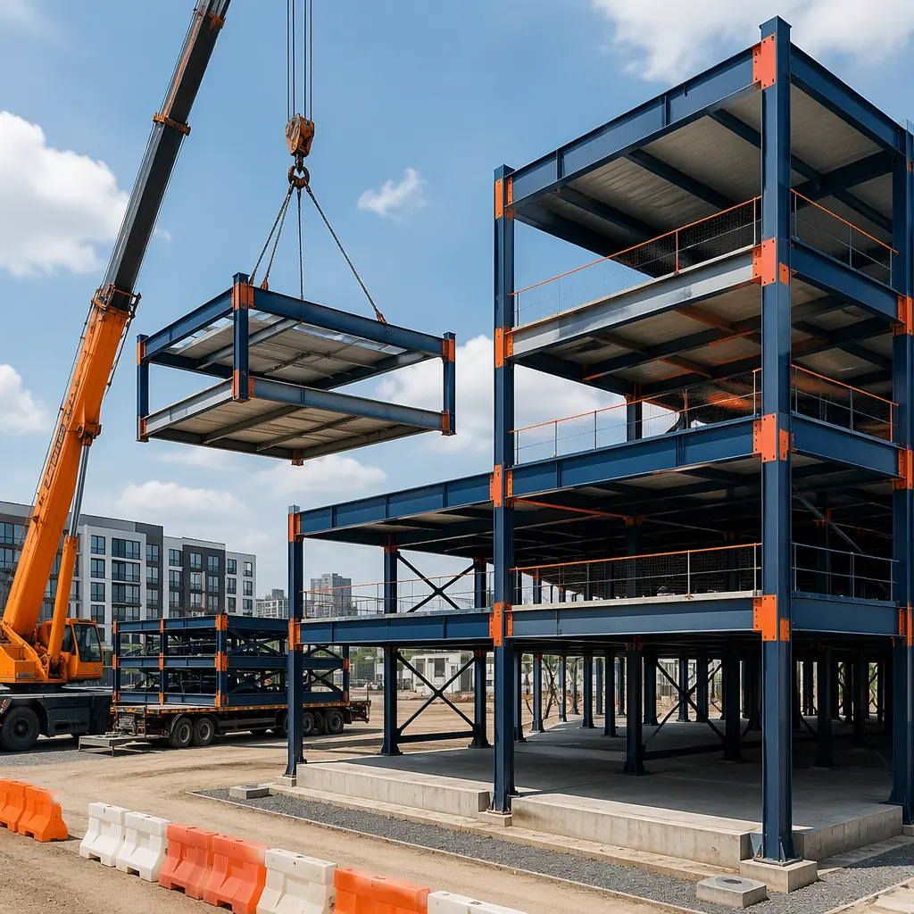
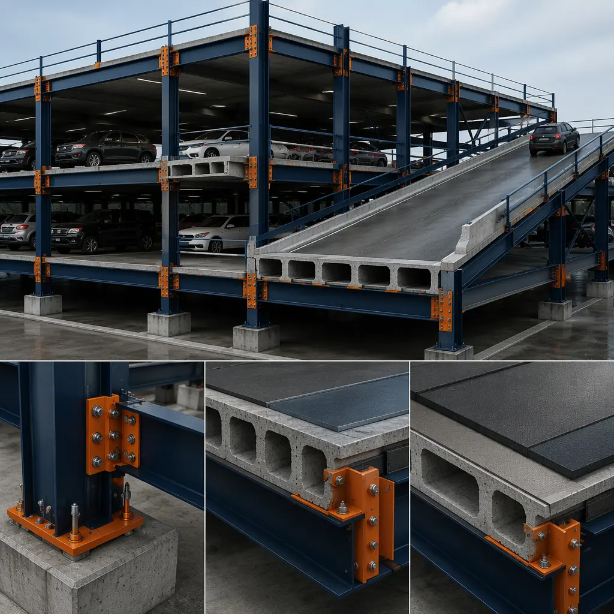

Parking structures are the most overlooked asset class in commercial real estate, and they are also the building type most structurally suited to modular construction. A parking garage is fundamentally a repetitive steel or concrete frame with no interior partitions, no complex MEP distribution, and no occupancy-dependent HVAC requirements. The structural bays repeat across every level; the deck slopes are identical; the stair towers and elevator cores are standardized from project to project. Modular construction — delivering factory-fabricated steel frame modules with pre-cast concrete deck panels — can compress the construction timeline for a 4-level, 400-space parking structure from 12–16 months (cast-in-place) to 6–8 months. For developers whose mixed-use projects are held hostage by parking podium construction on the critical path, this timeline compression directly accelerates the entire project delivery.

Why Cast-in-Place Parking Construction Is a Project Bottleneck
The critical path problem. In a typical 5-over-2 mixed-use development (five floors of wood-frame apartments over two levels of concrete parking podium), the parking structure sits on the project's critical path from day one. Foundation excavation, underground utility routing, formwork erection, rebar placement, concrete pour, 28-day cure, stripping, and repeat for Level 2 — this sequence consumes 12–16 months before the first wood framing member can be set on top of the podium. During those 12–16 months, the developer is paying construction loan interest on the entire project cost with zero revenue. Modular parking delivery eliminates the cast-in-place curing cycle entirely by using factory-fabricated steel modules with pre-cast deck panels that are bolted together on-site. Level 1 modules can be set and connected in 3–4 weeks per level rather than 8–10 weeks.
Weather sensitivity. Concrete parking structures lose 25–35 days per year to weather in northern climates. Frozen ground prevents excavation. Sub-freezing temperatures require heated enclosures and concrete admixtures that add $3–$5 per square foot to the slab cost. Rain stops formwork erection and rebar placement. Modular steel frames with pre-cast deck panels are set by crane and bolted in place regardless of temperature, and the deck panels arrive from the factory with their 28-day cure already complete. For more on how factory-based construction eliminates weather risk, see our guide to modular industrial and warehouse construction where the same principle applies at larger clear-span scales.
Labor intensity at peak construction. A cast-in-place parking structure consumes 40–60 skilled workers at peak: formwork carpenters, ironworkers tying rebar, concrete finishers, and laborers. In tight labor markets, finding this crew for a 4-month peak creates schedule risk that cascades to every trade waiting behind the parking podium. Modular parking delivery reduces on-site labor to a 6–8 person erection crew plus a crane operator, because the steel frames, deck panels, stair tower modules, and elevator shaft modules arrive pre-assembled from the factory.

Structural Systems for Modular Parking
Modular parking structures use one of two primary structural approaches, selected based on bay size, column grid, and local seismic requirements:
| System | Bay Size | Best For | Cost/Space |
|---|---|---|---|
| Steel frame + pre-cast double-tee deck | 60′ × 24′ | Long-span, column-free parking layout | $12,000–$15,000 |
| Steel frame + composite metal deck | 30′ × 18′ | Tighter urban sites, smaller footprints | $10,000–$13,000 |
| Hybrid: modular frame + CIP shear walls | Varies | High-seismic zones requiring ductile lateral system | $14,000–$17,000 |
For developers evaluating total project cost, these per-space figures compare favorably to cast-in-place parking at $16,000–$22,000 per space in major metropolitan markets. The modular premium (if any) is recovered through 6–8 months of accelerated project delivery and the interest carry savings that cascade through the entire development pro forma. For detailed per-square-foot cost analysis across building types, see our 2026 modular construction pricing guide.

Mixed-Use Integration — Parking as Podium
The highest-value application for modular parking is as the podium in a mixed-use development where residential, office, or hotel occupancies sit above the parking levels. This configuration demands precise column alignment between the parking levels below and the occupancies above, along with waterproofing at the podium deck, utility routing through the parking levels, and fire separation between parking and occupied space. Modular construction addresses each of these interface challenges:
- Column alignment. Factory-fabricated steel columns arrive with base plates drilled to match the foundation anchor bolt pattern and top plates drilled to match the upper-frame column connections. The ±2mm factory tolerance eliminates the field-survey-and-shim process that cast-in-place columns require before upper framing can begin.
- Podium deck waterproofing. The transition from parking below to occupied space above is a chronic leak point in mixed-use construction. Modular parking structures can incorporate a factory-installed waterproofing membrane on the top deck module, tested for water tightness before it leaves the factory. Site-applied membrane on cast-in-place decks is weather-dependent and difficult to test before upper framing covers it.
- Fire separation. IBC requires 2-hour or 3-hour fire-rated separation between parking garages and occupied space, depending on construction type. Modular steel frame modules with factory-installed fire-rated ceiling assemblies provide documented fire resistance that eliminates the field-inspection uncertainty of site-applied spray fireproofing. Our guide to modular construction fire safety covers fire-rated assembly requirements in detail.
- Utility riser coordination. Residential and commercial MEP risers passing through the parking levels need fire-stopped penetrations at every floor. Factory coordination of riser locations in the module design means penetrations are cut and sleeved during fabrication, not field-cut after the deck is in place.
For developers planning hospitality-anchored mixed-use projects, see our analysis of modular hotel construction for how the combined hotel-over-parking modular approach compresses total project timelines from 28 months to 16–18 months.
Municipal and Institutional Parking
Municipal parking authorities and institutional owners (hospitals, universities, airports) face different procurement constraints than private developers. Public bidding requirements, prevailing wage laws, and multi-year capital budget cycles create additional friction that modular delivery can reduce:
Design-bid-build compatibility. Modular parking structures are well-suited to public procurement because the factory-produced modules can be specified as performance-based assemblies rather than prescriptive construction methods. A municipal RFP can specify "provide a 400-space, 4-level parking structure with 60-foot clear-span bays, 2-hour fire rating, and 50-year design life" and allow modular proposers to compete against conventional proposers on equal footing based on total project cost and schedule.
Reduced on-site duration means reduced community disruption. A municipal parking garage in a downtown district means 12–16 months of construction fencing, lane closures, dust, and noise complaints from adjacent businesses. Modular delivery shrinks the on-site disruption window to 6–8 months, with the noisiest activities (welding, concrete grinding, painting) happening inside the factory rather than on the street. For municipalities that have mandated modular for other building types, our guide to modular government and municipal buildings covers the procurement pathways and case examples.

Developer ROI — The Parking Podium Math
Consider a 200-unit apartment project with a 2-level parking podium below. The project's total development cost is $55 million, and the construction loan carries 8.5% interest. The parking podium sits on the critical path for 14 months in a conventional cast-in-place scenario. If modular delivery compresses the podium construction from 14 months to 7 months, the developer saves:
- Interest carry: 7 months of interest on $55M at 8.5% = $2.73M in saved interest
- Lease-up acceleration: 7 months of earlier stabilized occupancy at $2,400/unit/month average = $3.36M in accelerated revenue
- General conditions savings: 7 months of site supervision, temporary utilities, fencing, and security at $35,000/month = $245,000
Total value of 7-month schedule compression: approximately $6.3 million on a $55 million project — a 12% return on total development cost from schedule acceleration alone, before factoring in any construction hard-cost differential. These economics hold regardless of whether the parking is below-grade (excavation intensive, modular advantage is reduced site disruption) or above-grade (modular advantage is maximized because the modules sit on a simple slab-on-grade foundation). For a comprehensive framework to evaluate modular vs. conventional development costs, see our modular construction ROI guide for developers.
Is Modular Parking Right for Your Project?
- Parking is on the critical path — your residential, office, or hotel occupancies cannot start until the parking podium is complete
- Urban infill site — reduced on-site activity duration minimizes neighbor disruption, lane closures, and community opposition
- Repetitive bay design — a regular column grid and consistent floor-to-floor height maximize modular repetition advantages
- Schedule-driven financing — construction loan interest rates above 7% make schedule compression disproportionately valuable
- Multi-phase development — modular parking can be expanded vertically by adding levels, or horizontally by adding bays, with minimal disruption to the operating lower levels
MODURA has delivered over 500 projects across 18 countries. Our ISO 9001 and ISO 14001 certified factories produce 4,000 modules annually with ±2mm fabrication tolerance, and our engineering team provides structural coordination from schematic design through module delivery and on-site erection. If you're evaluating a parking structure as part of a mixed-use development, municipal project, or institutional campus, we can provide a preliminary timeline and per-space cost estimate based on your bay configuration and site constraints.